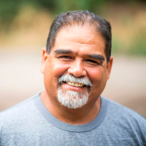

Ústřední ústav revmatologie

Postarejte se o své klouby

Centrum pevných kloubů

Zdravé klouby
-

Jsem super babička!
Kvůli bolesti kolen a zad jsem sotva mohla chodit. Prášky, injekce a operace na mě neměly žádný vliv. Naopak: vzali mi peníze a energii. Nevěděla jsem, co mám dělat. Naštěstí jsem se dozvěděla o tomto prostředku. A je moc fajn že jsem to udělala! Cítila jsem se lépe od prvního dne užíváni. Za měsíc nebo tak cítím se jako nová. Dlouho se procházím a starám se o zahradu, kterou jsme zasadili s vnučkou. Bolest je zapomenuta. Děkuji!
-

Jednoduchost a účinnost
Je těžké uvěřit, že taková jednoduchá metoda je tak účinná, stačí brát prostředek a již po několika dnech se těší pohyby bez nepohodlí. Moje sestra, moji bratranci a já jsme ho použili a doporučujeme ho všem. Sbohem nepohodlí v kloubech.
-

Cítím se zbytečný.
Roky tvrdé práce ve firmě mi pořádně poškodily koleny. Slíbil jsem svým vnoučatům, že s nimi budu hrát fotbal nebo jezdit na kole, ale nemohl jsem to dělat kvůli bolesti. Děti tyto věci nechápaly a rozčilovaly se. Cítil jsem se zbytečný. Do té doby než mě dcera donutila zkusit . Hned jsem cítil rozdíl. Je to měsíc, co používám to použil a cítím se nezranitelný, teď můžu trávit čas se svou rodinou, zejména s vnoučaty, jako předtím.
-

Vrátila jsem svůj život.
Nadváha a dlouhá práce ve stoji mi zničily kolena, nemohla jsem vydržet bolest, takže jsem užívala více než 10 tablet denně. Ale cítila jsem se omámená a ospalá, nemohla jsem normálně žít. Naštěstí kolega z práce doporučil tento úžasný produkt. To se ukázalo jako ideální řešení. Bolest zmizela jako mávnutím kouzelného proutku a já se opět začala věnovat práci kadeřníka. Vrátila jsem se ke svému zdraví, což mi umožnilo začít cvičit a ... Zhubla jsem 10 kilo! Neuvěřitelné změny.
-

Moje žena si přestala stěžovat.
Doma mi manželka vždycky najde něco: opravit kohoutek, posunout skříň nebo něco vymalovat. Jak se mám ohýbat a namáhat, když bolí mě záda? A také lokty a kolena. Naštěstí gel pomohl páteři a kloubům zotavit se. Cítil jsem, že jsem shodil nadváhu, kterou jsem nosil roky. Moje žena si přestala stěžovat, že jí nechci pomáhat v domácnosti!
-

Vrátil jsem se do práce
Představte si, jaké to je nehýbat se jednou rukou. Je to těžké, že? To se mi stalo, protože mě bolely prsty, otekly mi ruce a třásly se. Jsem klenotník, to, co dělám, je moje práce a moje vášeň. Musel jsem stále častěji zavírat svou malou dílnu a kvůli tomu se finanční situace doma zhoršovala. Začal jsem hledat metody pro zotavení kloubů a všude mi bylo řečeno, že nejlepší je produkt . Zkoušel jsem to bez kontroly, ale po 20 dnech moje ruce byly zdravější než před 10 lety. Mohl jsem se vrátit do práce!
-

Nový život za tak nízkou cenu
Obvykle, pokud je něco účinné, musí být drahé. Tak to bylo s mým osobním masérem, který mě stál čtrnáct tisíc měsíčně a musel dělat zázraky. Naopak to jen zhoršovalo a moje klouby a páteř bolely ještě víc. Když mi můj švagr poradil, abych zkusil . myslela jsem, že je to úplný nesmysl. Jak mi může pomoci gel, když mi údajně fenomenální masér nepomohl? Měli byste vidět můj obličej, když bolest byla pryč. Prostě zázrak!
-

Jediná účinná metoda
Zkoušela jsem různé metody, jak se zbavit křupání a bolesti stehen. Nic mi nepomohlo. Ještě horší je, že degenerace se rozšířila do páteře. S stalo se naopak. Už se nebojím o své zdraví, protože jsem 100% zdravá!

Po 14 dnech zapomenete na bolesti kloubů a páteře-účinek je zaručen nezávislými testy

Dobrý den.
Jsem profesor Václav Kopeček vědec a odborník na molekulární biologii. Zde vás chci seznámit s největším úspěchem mého života. Vyvinul jsem metodu, díky které může někdo odstranit bolest, stejně jako obnovit klouby a páteř a současně vrátit 100% mobilitu za pouhých 14 dní.
Takže pokud chcete, bez chemických a neúčinných prostředků:
- Zmírnit bolesti kloubů a páteře - cítit úlevu ihned po použití metody;
- Obnovit a posílit klouby, šlachy, svaly a páteř na 87% aby fungovaly jako nové;
- Vrátit 100% fyzické zdraví a nebát se stát se zdravotně postiženým;
- Odstranit ztuhlost a necitlivost v kloubech a páteři, vrátit pohodlí a plynulosti pohybu;
- Chraňte své klouby a páteř od ničení a zachování absolutního fyzického zdraví po mnoho let;
- Odstranění degenerace, zánětu a tak dále - snížení bolesti a návrat pohodlí v pohybu;
- Obnovit tělo po zlomeninách, protahovačích a úrazech;
- A díky tomu mít třikrát více energie a znovu uživat si života!
Měli byste vědět, že toho všeho lze dosáhnout bez nebezpečných operací, nákladné terapie, nekonečného čekání ve frontě na odborníky (kteří také vzdali poté, co nedokázal nic udělat... a bez polykání jedovatých chemikálií (škodlivých pro játra, žaludek a ledviny)... a konečně, ušetřit tisíce korun. Pokud to chcete udělat, měli byste si přečíst, co vám chci říct.
Nezáleží na tom, kolik je Vám let a jak dlouho trpíte bolesti kloubů nebo páteře. Nezáleží na tom, zda máte křupání v kostích po dobu 2 dnů nebo 20 let. Dokonce i když vám odborník řekl, že vaše klouby a páteř jsou zcela zničeny a ztratili jste veškerou naději na normální život... Musíte vědět, že už po 14 dnech si můžete užít 100% mobilitu. Bez bolesti!
Podívejte se, proč je moje metoda alternativou k neúčinným způsobům, jak bojovat proti bolesti kloubů:
- Zmírňuje bolest okamžitě po aplikaci a přes 14 dní ji navždy odstraní;
- bezpečný pro tělo: makromolekulární vzorec je ve formě 100% přírodního gelu, který pracuje v úplné harmonii s lidským tělem.
- opravuje i nejvíce poškozené klouby a páteř takže fungují jako nové, bez bolesti;
- snadno se používá a každý může podstoupit terapii doma sám, místo aby čekal v čekárnách odborníků a prosil o pomoc;
- ušetří tisíce korun než utrácet za drahé a neúčinné chemické přípravky a terapie.
Vyvinul jsem přirozenou metodu, která obnoví vaše zničené klouby a páteř
Díky němu zapomenete na bolest a strach z úplného postižení... Všechny problémy, které trpíte kvůli slabým kloubům nebo slabé páteři, zůstanou minulostí. Zcela se zbavíte nejen bolesti, ale i ztuhlosti, křečí a otoku. Nakonec budete moci dělat všechno, co jste nemohli dělat kvůli bolesti.
Budete moci vylézt po schodech, naklonit se, bez problémů nosit vnoučata na rukou. Můžete bezpečně pečovat o zahradu, chodit, jezdit na kole,tančit! A to vše proto, že jsem byl schopen vyvinout inovativní vzorec pro obnovit klouby a vrátit jim plnou pohyblivost. Jak jsem to udělal?
Chtěl jsem zachránit svou matku před postižením
Podle nejnovějších studií má každý třetí obyvatel Česka ve věku 36 až 95 let problémy s klouby nebo páteří. Tito lidé si to často ani neuvědomují, považují to za normální, že někdy tělo bolí, objevuje se necitlivost nebo křupání. Většina z nich je však ohrožena značnou destrukcí chrupavky a degenerace, které mohou vést k postižení.
Bohužel se tento problém dotkl i mé matky. Zpočátku měla potíže vylézt po schodech nebo vstát z pohovky. Pak se ale situace zhoršila... Zahrada, o kterou se tak ráda starala, začala růst plevelem, protože se o něj nemohla starat. Přestala nás zvát na rodinné večeře. Byla čím dál víc podrážděná a smutná. Pak se kvůli bolesti kolen, stehen, páteře a loktů nemohla ani se osprchovat.
Bylo to nebezpečné pro její život!
Nejhorší bylo, že nehybnost začala ohrožovat její život. Nikdy nezapomenu na den, kdy jsem přijel pro mámu, abych ji vzal k gastroenterologovi. Moje máma prostě potřebovala přejít ulici a... málem ji srazilo auto! Šla velmi pomalu kvůli bolesti a najednou se její koleno stalo tak nehybným a bolestivým, že nemohla udělat ani krok. Řidič na poslední chvíli zabrzdil...
Byl jsem naštvaný, když jsem viděl maminčinu tašku plnou různých propagačních prostředků na klouby. Ukázalo se, že jich brala velké množství. Tak bylo jasné, proč má žaludeční vředy, problémy s játry a další žaludeční problémy... Mama chtěla něco udělat, ale tyto prostředky nejen nepomáhaly, ale nakonec otravovali její tělo.
Jak jsem vynalezl "patent" na nezničitelné klouby?
Měl jsem pomoci své matce vrátit zdravé klouby a spolu s nimi i zdraví a radost ze života. Chtěl jsem, aby byla skvělou babičkou pro moje vnoučata, stejně jako byla pro mě skvělou matkou. Pak jsem si řekl: "Člověče, ty jsi vědec! Podílel ses na objevu mnoha látek, které bojují s různými nemocemi. Co kdybys vyvinul prostředek na posílení kloubů?" Takže jsem začal testy...
Během roku jsem prováděl intenzivní laboratorní testy. Testoval jsem různé kombinace účinných látek na mé matce. Musím zdůraznit, že všichni byli 100% přírodní a bezpečné pro tělo. Inspiroval jsem se mnišskými bylinnými recepty a spojil je s nejnovějšími pokroky v molekulární biologii. Vědecké poznatky, víra v přírodu a trochu štěstí se rychle vyplatily: vymyslel jsem unikátní makromolekulární vzorec.
Okamžitě jsem začal provádět rozsáhlé testy. Účinnost je 98% a je potvrzená největšími výzkumnými institucemi v Evropě a USA! Ještě ve fázi testování můj makromolekulární vzorec přirozeně obnovil funkce kloubů a páteře u tisíců dobrovolníků.
Úžasné efekty
Bolest mé matky ustoupila okamžitě po podání produktu. Byla ráda, že ji už netrápí pulzující bolest v kolenou. Ale to byl jen začátek. Po týdnu její klouby a páteř přestaly křupat a znecitlivět. Pak zmizely otoky v kolenou a loktech, prošly všechny záněty v kloubech a páteři. Maminka se vrátila k péči o svou oblíbenou zahradu. Všichni jsme byli ohromeni, když najednou nasedla na kolo a jela šťastná!
"Proč jdete tak pomalu?" netrpělivě se zeptala, když jsme šli celou rodinu na oběd. A ještě jsme si nezvykli v její přítomnosti chodit normálně. Po třech týdnech se maminka šťastně přiznala: "Synu, Moje klouby jsou vyléčeny. Cítím se stejně aktivní jako v mládí! Vynalezl jsi prostředek na bolesti kloubů! Kolika lidem pomůžeš! Jsem ti moc vděčná." A opravdu, moje máma na svých 85. narozeninách tančila se svými pravnuky šťastně. A hosté byli ohromení, když viděli, v jaké je formě!
Moje matka plně obnovila mobilitu a spolu s ní energii a radost ze života.
Doposud bylo zhoršení stavu kloubů a páteře v průběhu let nevyhnutelné. Dnes s pomocí makromolekulárního vzorce lze proces opotřebení kloubů a obratlů lidské kostry nejen zpomalit, ale také zvrátit.
Dovolte mi, abych vám vysvětlil, jak přesně funguje můj super účinný vzorec pro silné klouby. Tento proces je poměrně složitý, ale pokusím se ho vysvětlit tak, aby byl srozumitelný pro obyčejné lidí.
Okamžitě odstraňuje bolest a obnovuje klouby 24 hodin denně
Klouby a páteř se v průběhu let opotřebovávají, ale jsou také zničeny nadváhou, intenzivní fyzickou prací, přenosem těžkých předmětů, nadměrným sportem, zraněním a modřinami. Synoviální tekutina a chrupavka jsou zničeny. Klouby jsou jako nezmazaný závěs: začínají se neustále třít a degradovat. V průběhu času začnete cítit tuhost a strašnou bolest, která zabraňuje normálnímu pohybu. Vyvíjí se zánět a těžká degenerace.
Bohužel buňky chrupavky a synoviální tekutiny nemají schopnost samoléčby. To znamená, že na rozdíl od jiných buněk lidského těla se nemohou vrátit k životu. To je důvod, proč se vaše klouby a páteř zhoršují každý den. Samozřejmě nebudete přestat chodit a dělat každodenní věci, abyste ochránili klouby a páteř. To by bylo absurdní.
Takže mým úkolem bylo vytvořit radikální vzorec, který odstraní bolest, opraví poškozené klouby a páteř a ochrání je před budoucím poškozením. A to se mi podařilo! Vyvinul jsem makromolekulární vzorec pro intenzivní regeneraci. Nazval jsem ho .
Unikátní vzorec okamžitě proniká do postižených oblastí a vypíná elektrické impulsy bolesti na buněčné úrovni abyste mohli dělat své věci bez bolesti. Díky svým vlastnostem stimuluje buněčnou výživu, která obnovuje regenerační procesy na 300%. Současně přírodní složky zahajují procesy automatické regenerace chrupavky a synoviální tekutiny. Pravidelné užívání tohoto vzorce stačí k regeneraci 24 hodin denně. Děláte to, co děláte vždy, a vaše klouby a páteř jsou mladší a obnovují mobilitu. Takže degenerace a bolest zmizí navždy za 30 dní. Bez vedlejších účinků!
Proč se můj makromolekulární vzorec nazývá "zázračnou protilátkou proti bolesti kloubů"?
VÍCE NEŽ 98% ÚČINNĚ OBNOVUJE CHRUPAVKOVOU TKÁŇ A SYNOVIÁLNÍ TEKUTINU

PŘED
Zničený a postižený degenerací a bolestí kloubů
PO
Obnovený kloub: 100% zdravý a bez bolesti
Zatím se to může zdát jako zázrak. To je však fakt, který potvrzuje případ mé matky a 14 tisíc lidí, kteří už díky mé metodě dokázali opravit silné klouby a páteř. Navíc účinnost makromolekulárního vzorce byla bezpodmínečně prokázána německým výzkumným centrem v Dortmundu. Je to objev světového formátu, který získal uznání a obdiv nejlepších odborníků v oblasti revmatologie, ortopedie a neurologie. Na druhé straně, i nadále se dostat emocionální e-maily od lidí, kteří děkují mi za to, že jsem "je vyléčil"; to je hlavní důvod, proč jsem šťastný a hrdý na tento objev.
100% BEZPEČNÉ A VELMI SNADNÉ POUŽITÍ
Přírodní ingredience dělají zázraky: vědě se podařilo vytvořit dokonalé složení! Toto motto mě doprovázelo při vytváření makromolekulárního vzorce pro opravu kloubů. Stačí aplikovat krouživými masážními pohyby malé množství výrobku až do úplného vstřebání 2-3 krát denně a odstranit bolest. A pak, den za dnem, užijte si posílení kloubů a páteře a návrat do plnohodnotného života! (Účinek závisí na vlastnostech každého organismu)
Všichni vaši přátelé a příbuzní, kteří jsou zvyklí vidět, že trpíte bolestí, sotva chodíte, budou ohromeni. Když vás uvidí, jak běžíte, jezdíte na kole a tančíte bez bolesti, nebudou věřit, že jste obnovili klouby za 30 dní!

OKAMŽITÁ ÚLEVA OD BOLESTI


PŘÍRODNÍ TERAPIE BEZ VEDLEJŠÍCH ÚČINKŮ


OBNOVA KLOUBŮ A PÁTEŘE


SNADNÉ POUŽITÍ


100% FYZICKÉ SCHOPNOSTI ZA 30 DNÍ


ÚSPORA TISÍC KORUN
Jak si můžete nechat ujít tuto příležitost porazit bolest a získat zdraví navždy?
Můžete i nadále trpět hroznými bolestmi kloubů a páteře. Můžete také zničit své zdraví škodlivou chemií a žít s duchem postižení, který se skrývá za zády? Ale proč, když vám ručím rychlý, jednoduchý a levný způsob získat zpět své zdraví bez bolesti? Potřebujete pouze 30 dní terapie, abyste se připojili k 14 000 spokojeným uživatelům , kteří již porazili bolest, obnovili své klouby a páteř a nyní si užívají silného zdraví!
Nic neriskujete!
Když budete používat , okamžitě odstraníte bolest a obnovíte fyzickou pohyblivost za 30 dní. A nic neriskujete! Jako světový úspěch získal můj makromolekulární vzorec prestižní trojitou záruku: originalita, kvalita a spokojenost.
Trojitá záruka spokojenosti
1. Záruka originality: v makromolekulárním prostředku používá se vzorec založený na nejsilnějších látkách, které obnovují klouby a páteř. Jeho účinnost byla potvrzena laboratorními testy. To je jediný takový inovativní vzorec. Takže si můžete být jisti, že získáte originální produkt, který je k dispozici pouze prostřednictvím tohoto webu.
2. Záruka kvality: díky pokročilému procesu výroby makromolekulárního vzorce splňuje nejvyšší standardy kvality. Vzhledem k vašemu zdraví a blahobytu je koncentrace účinných látek zvolena tak, aby terapie byla zcela bezpečná. A to vše proto, aby jeho akce stoprocentně splnila vaše očekávání.
3. Záruka spokojenosti: četné laboratorní a spotřebitelské testy potvrzují zvýšenou účinnost . Díky těmto výsledkům získal nástroj uznání odborníků z celého světa, kteří jej doporučují svým pacientům. Jsou přesvědčeni, že za 30 dní se zbavíte bolesti kloubů a páteře a také se vrátíte 100% mobility.
Zapomeňte na bolest, obnovte klouby a vraťte se do 100% fyzického zdraví za 30 dní snadno, bezpečně a ekonomicky
Velké farmaceutické společnosti v USA a Japonsku doslova bojují o patent na můj makromolekulární vzorec. Když to prodám, prostředek bude k dispozici po celém světě, ale samozřejmě za velmi vysokou cenu.
Dokud se to nestalo, rozhodl jsem se, že ho zpřístupním v Česku tím, že se spojím se slevovým klubem s financováním o 50% levněji. Vše proto, aby se co nejvíce lidí v mé vlasti jednou provždy zbavilo problémů s klouby a páteří.
Proto vás vyzývám, abyste využili této příležitosti! Umístit objednávku do slevového klubu je velmi jednoduché. Nemusíte posílat peníze nebo platit kartou, abyste získali produkt. Vše, co musíte udělat, je vyplňte formulář za 2 minuty a za pár dní obdržíte balíček, za který budete pohodlně platit na poště.
Děkujeme, že jste si našli čas na přečtení mé zprávy. Přeji vám dobré zdraví ve vašem novém životě, ve kterém budete si užívat dobrého zdraví i... Za pouhých 30 dní budete tančit, běhat, jezdit na kole a budete moci dělat vše, co vás dosud omezovalo na bolest!
Profesor Václav Kopeček
Získejte za účast ve
slevovém klubu sleva
50%

-
Jsem super babička!
Kvůli bolesti kolen a zad jsem sotva mohla chodit. Gely, injekce a operace na mě neměly žádný vliv. Naopak: vzali mi peníze a energii. Nevěděla jsem, co mám dělat. Naštěstí jsem se dozvěděla o tomto prostředku. A je moc fajn že jsem to udělala! Cítila jsem se lépe od prvního dne užíváni. Za měsíc nebo tak cítím se jako nová. Dlouho se procházím a starám se o zahradu, kterou jsme zasadili s vnučkou. Bolest je zapomenuta. Děkuji!
-
Jednoduchost a účinnost
Je těžké uvěřit, že taková jednoduchá metoda je tak účinná, stačí brát prostředek a již po několika dnech se těší pohyby bez nepohodlí. Moje sestra, moji bratranci a já jsme ho použili a doporučujeme ho všem. Sbohem nepohodlí v kloubech.
-
Cítím se zbytečný.
Roky tvrdé práce ve firmě mi pořádně poškodily koleny. Slíbil jsem svým vnoučatům, že s nimi budu hrát fotbal nebo jezdit na kole, ale nemohl jsem to dělat kvůli bolesti. Děti tyto věci nechápaly a rozčilovaly se. Cítil jsem se zbytečný. Do té doby než mě dcera donutila zkusit . Hned jsem cítil rozdíl. Je to měsíc, co používám to použil a cítím se nezranitelný, teď můžu trávit čas se svou rodinou, zejména s vnoučaty, jako předtím.
-
Vrátila jsem svůj život.
Nadváha a dlouhá práce ve stoji mi zničily kolena, nemohla jsem vydržet bolest, takže jsem užívala více než 10 tablet denně. Ale cítila jsem se omámená a ospalá, nemohla jsem normálně žít. Naštěstí kolega z práce doporučil tento úžasný produkt. To se ukázalo jako ideální řešení. Bolest zmizela jako mávnutím kouzelného proutku a já se opět začala věnovat práci kadeřníka. Vrátila jsem se ke svému zdraví, což mi umožnilo začít cvičit a ... Zhubla jsem 10 kilo! Neuvěřitelné změny.
-
Moje žena si přestala stěžovat.
Doma mi manželka vždycky najde něco: opravit kohoutek, posunout skříň nebo něco vymalovat. Jak se mám ohýbat a namáhat, když bolí mě záda? A také lokty a kolena. Naštěstí gel pomohl páteři a kloubům zotavit se. Cítil jsem, že jsem shodil nadváhu, kterou jsem nosil roky. Moje žena si přestala stěžovat, že jí nechci pomáhat v domácnosti!
-
Vrátil jsem se do práce
Představte si, jaké to je nehýbat se jednou rukou. Je to těžké, že? To se mi stalo, protože mě bolely prsty, otekly mi ruce a třásly se. Jsem klenotník, to, co dělám, je moje práce a moje vášeň. Musel jsem stále častěji zavírat svou malou dílnu a kvůli tomu se finanční situace doma zhoršovala. Začal jsem hledat metody pro zotavení kloubů a všude mi bylo řečeno, že nejlepší je produkt . Zkoušel jsem to bez kontroly, ale po 20 dnech moje ruce byly zdravější než před 10 lety. Mohl jsem se vrátit do práce!
-
Nový život za tak nízkou cenu
Obvykle, pokud je něco účinné, musí být drahé. Tak to bylo s mým osobním masérem, který mě stál čtrnáct tisíc měsíčně a musel dělat zázraky. Naopak to jen zhoršovalo a moje klouby a páteř bolely ještě víc. Když mi můj švagr poradil, abych zkusil . myslela jsem, že je to úplný nesmysl. Jak mi může pomoci gel, když mi údajně fenomenální masér nepomohl? Měli byste vidět můj obličej, když bolest byla pryč. Prostě zázrak!
-
Jediná účinná metoda
Zkoušela jsem různé metody, jak se zbavit křupání a bolesti stehen. Nic mi nepomohlo. Ještě horší je, že degenerace se rozšířila do páteře. S stalo se naopak. Už se nebojím o své zdraví, protože jsem 100% zdravá!
Komentáře:
Pavel Tuček
Životní příběh! Prošel jsem devíti kruhy pekla v nemocnici, všemi procedurami a mučením. Klouby bolely a stále bolely. Dodnes trpím klouby. Kde mohu najít tento ?
Žofie Mrázová
Tento prostředek se neprodává v lékárnách! Obešla jsem všechny lékárny města! Objednala jsem si to zde, prostředek přišel rychle, navíc zde nabízejí slevu. Začala jsem kurz :)
Zbyněk Řehoř
Podstoupil jsem dvě operace. Asi šest měsíců jsem ležel, rekonvalescence byla velmi dlouhá. Našel jsem a po měsíci jsem zapomněl na operaci, kolena přestala bolet a otékat! Opravdu dobrý prostředek bez vedlejších účinků
Jindřich Kosík
Můj dědeček absolvoval kúru s a nebral žádné prostředky. Říká, že se znovu narodil. Předtím ležel celé dny v posteli a teď vždycky něco dělá, vždycky ho vidím zaneprázdněným
Marcel Svoboda
Pracuji jako trenér. Často mám poraněné klouby a mi pomáhá. Prostředek zmírňuje bolest a rychle opravuje poškozený kloub.
Leona Kysilková
Celý život jsem se věnovala krasobruslení, ale musela jsem přestat... bolí mě klouby. Nešla jsem k doktorovi. Odborníci předepisují mnoho drahých prostředků a výsledek není. Měla jsem štěstí, že moje teta pracuje jako terapeutka a doporučila mi, abych vyhledala . Potřebovala jsem jen 3 balení, abych se plně zotavila!
Pavla Chládková
Před rokem jsem si poranila levou ruku, loket mě neustále bolel. V nemocnici mě chtěli operovat. Bála jsem se, odmítla jsem a šla hledat alternativní řešení. Moje babička mi dala , používá ho pro klouby a pomáhá. Po prvních několika aplikacích se bolest snížila, ale nepohodlí zůstalo a pak prostředek došel... Objednám si ještě)
Zdeněk Polanský
Dokázal jsem vyléčit chronickou artritidu pomocí ! Jen během jedné kúry! Moje manželka mi ho koupila. Řekla, že slyšela o jeho účinnosti a obešla všechny naše lékárny a pak jí prodejce řekl, že ji můžete koupit pouze přes internet.
Petr Vích
Souhlasím se všemi komentáři. Tento prostředek opravdu pomáhá! Váhal jsem ho koupit, zkoušel jsem mnoho mastí a prostředků. Efekt byl vždy dočasný. Po aplikaci klouby přestaly bolet navždy. Kúra trvala jen něco málo přes měsíc.